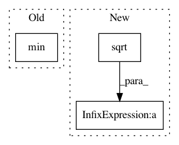

b96598a16031c8b940e991f7c1bf80d702fea07f,gpflowopt/acquisition/mes.py,MinValueEntropySearch,_setup,#MinValueEntropySearch#,64
Before Change
Y = self.data[1][valid, :]
Xrand = RandomDesign(self.gridsize, self._domain).generate()
fmean, fvar = m.predict_f(np.vstack((Xrand, X)))
right = np.min(Y)
left = right
probf = lambda x: np.exp(np.sum(norm.logcdf(-(x - fmean) / np.sqrt(fvar)), axis=0))
i = 0
After Change
Xrand = RandomDesign(self.gridsize, self._domain).generate()
fmean, fvar = m.predict_f(np.vstack((X, Xrand)))
idx = np.argmin(fmean[:N])
right = fmean[idx].flatten() + 2*np.sqrt(fvar[idx]).flatten()
left = right
probf = lambda x: np.exp(np.sum(norm.logcdf(-(x - fmean) / np.sqrt(fvar)), axis=0))
In pattern: SUPERPATTERN
Frequency: 3
Non-data size: 3
Instances
Project Name: GPflow/GPflowOpt
Commit Name: b96598a16031c8b940e991f7c1bf80d702fea07f
Time: 2017-09-27
Author: Pxidbpb4Lq
File Name: gpflowopt/acquisition/mes.py
Class Name: MinValueEntropySearch
Method Name: _setup
Project Name: matplotlib/matplotlib
Commit Name: 3abe21872cf528c3623d342a5ea8f398e9b5ad5b
Time: 2018-07-08
Author: efiring@hawaii.edu
File Name: lib/matplotlib/contour.py
Class Name: ContourSet
Method Name: _process_levels
Project Name: SeanNaren/deepspeech.pytorch
Commit Name: e30b50ff849a417b8e70d121edd2e85f0565eee1
Time: 2017-09-13
Author: jinserk.baik@gmail.com
File Name: data/data_loader.py
Class Name: NoiseInjection
Method Name: inject_noise_sample